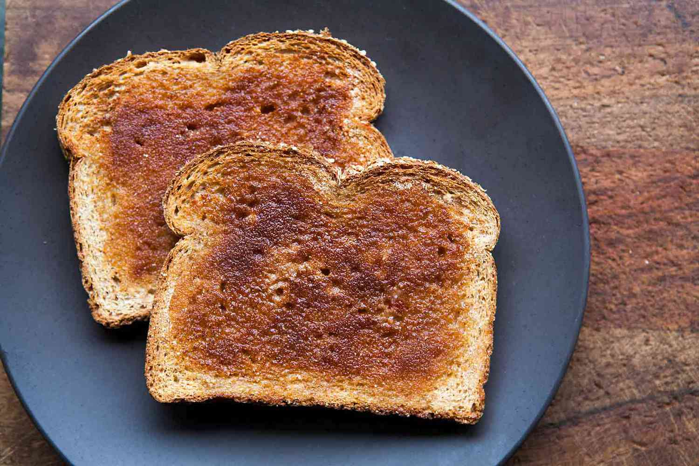

Toast

Description
Toast is toasted bread, often topped with butter, jam or other spreads. It may look dark, but don't let that get in your head - it's not burnt, and it's simple enough to eat in bed.
Ingredients
- 2 slices of bread
- Small amount of butter
Steps
- Place bread in toaster, and set to medium, or whatever setting you prefer.
- Start the toaster.
- When finished, remove toast, spread butter and any other topping you like, and serve!